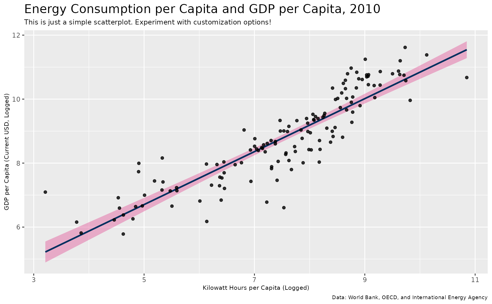
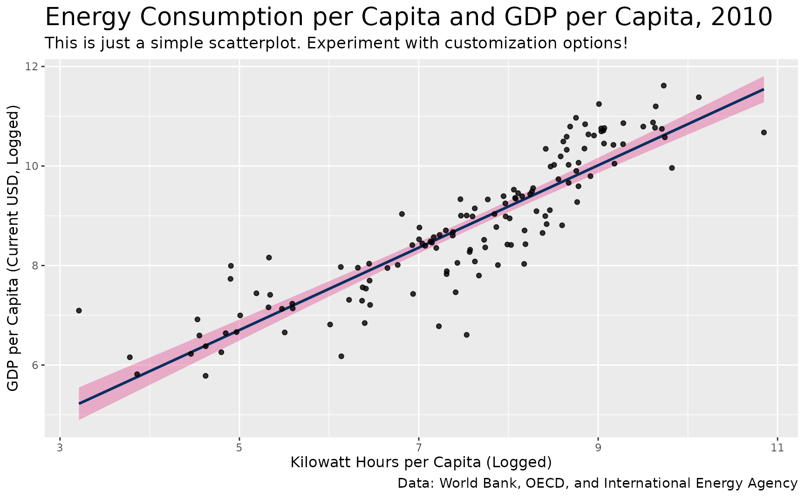

These are assorted functions that will fine-tune various things in a ggplot2 plot.
Value
adj_font_size() takes a plot made in ggplot2 and changes
the font size by some number requested by the user. It returns a plot with
bigger or smaller fonts, per the user's request.
Details
adj_font_size() is a simple wrapper for some basic
ggplot2 code that will allow you to adjust the font size on the plot by
some number.
Right now, adj_font_size() assumes you are using theme_steve()
because the font sizes initialized in the function are defaults from the theme.
Examples
library(ggplot2)
example_plot(type = "scatter") + adj_font_size(-2)
#> `geom_smooth()` using formula = 'y ~ x'

example_plot(type = "scatter") + adj_font_size(2)
#> `geom_smooth()` using formula = 'y ~ x'
